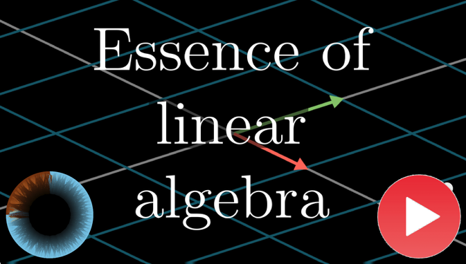
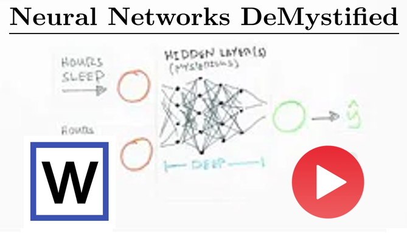

<div id="sidebar">
<a href="http://bioengineering.missouri.edu/faculty/thomen-r.php"></a>
<h1>Robby Thomen PhD</h1>
<h2>Assistant Professor</h2>
<h2>Radiology, BioEngineering</h2>
<h2>University of Missouri</h2>
<h2><a href="mailto:thomenr@health.missouri.edu">thomenr@health.missouri.edu</a></h2>
<h2><a href="https://scholar.google.com/citations?user=XEWnXAIAAAAJ&hl=en">Dr Thomen's Google Scholar Page</a></h2>
<p></p>


<h1>Links</h1>
<h3><a href="research.html">Research Overview</a></h3>
<h3><a href="personnel.html">Research Team</a></h3>
<p></p>


<h1>Recommended Videos</h1>
<div class="w3-content w3-section" style="max-width:500px">
  <a href="https://www.youtube.com/watch?v=kjBOesZCoqc&list=PLZHQObOWTQDPD3MizzM2xVFitgF8hE_ab"></a>
  <a href="https://www.youtube.com/watch?v=bxe2T-V8XRs&list=PLiaHhY2iBX9hdHaRr6b7XevZtgZRa1PoU"></a>
  <a href="https://www.youtube.com/watch?v=aircAruvnKk&list=PLZHQObOWTQDNU6R1_67000Dx_ZCJB-3pi"></a>
</div>
<script>
var myIndexThumbs = 0;
carouselThumbs();

function carouselThumbs() {
    var i;
    var x = document.getElementsByClassName("myThumbnails");
    for (i = 0; i < x.length; i++) {
      x[i].style.display = "none"; 
    }
    myIndexThumbs = Math.floor(Math.random() * x.length) + 1;
    if (myIndexThumbs > x.length) {myIndexThumbs = 1}    
    x[myIndexThumbs-1].style.display = "block";  
    setTimeout(carousel, 1000); // Change image every 2 seconds
}
</script>


<p></p>
<h1>Collaborators</h1>
<h3><a href="https://biochem.missouri.edu/faculty/faculty-members/vandorens/index.php">Biochemistry</a></h3>
<h3><a href="https://healthprofessions.missouri.edu/physical-therapy-program/personnel/trent-m-guess/">Physical Therapy</a></h3>
<h3><a href="https://cpir.cchmc.org/">Cincinnati Children's Pulmonary Imaging</a></h3>
<h3><a href="https://pulmonary.wustl.edu/faculty/mario-castro-md/">Washington University Pulmonary Medicine</a></h3>

<p></p>
<h1>Adventures</h1>
<div class="w3-content w3-section" style="max-width:500px"><a href="gallery.html">
  
  
  
</a></div>
<script>
var myIndex = 0;
carousel();

function carousel() {
    var i;
    var x = document.getElementsByClassName("mySlides");
    for (i = 0; i < x.length; i++) {
      x[i].style.display = "none"; 
    }
    myIndex = Math.floor(Math.random() * x.length) + 1;
    if (myIndex > x.length) {myIndex = 1}    
    x[myIndex-1].style.display = "block";  
    setTimeout(carousel, 4000); // Change image every 2 seconds
}
</script>
<p></p>
</div>